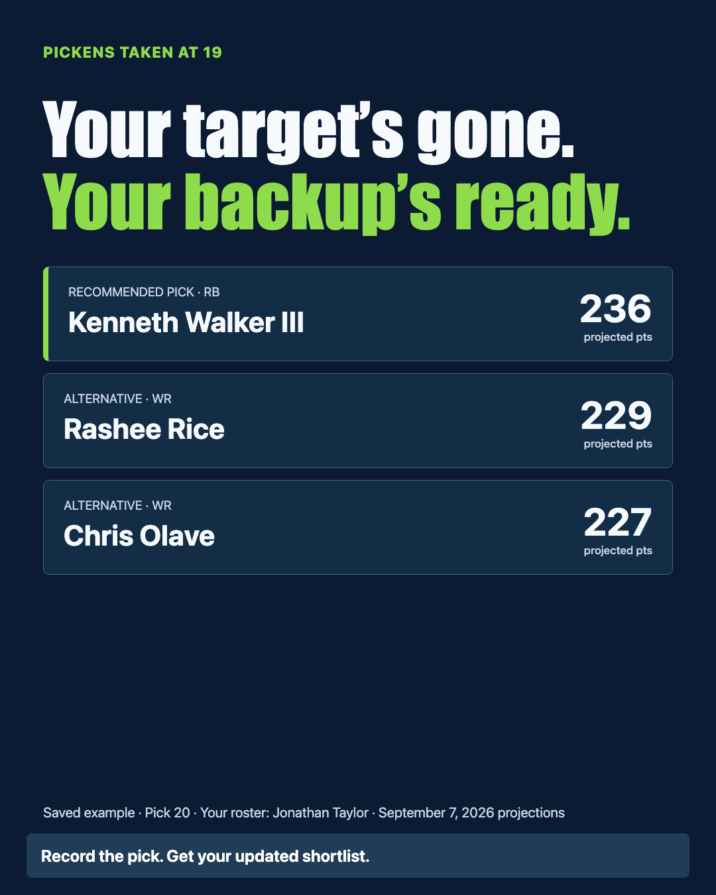

Compare sources before trusting a projection.
See which sources support a player’s estimate, where they disagree, and where the evidence is incomplete.
Version 3 · Free & open source
Get targets, backups, and a draft plan built around your league. Record picks in live mode to update your next move.
Free & open source. Use an AI assistant for preparation or local Python for live advice. Choose your setup →

A strong player can still be a difficult pick. Compare what they add to your roster, what you might find later, and how much faith to put in the numbers.
See which sources support a player’s estimate, where they disagree, and where the evidence is incomplete.
Weigh starting-lineup contribution and modeled bench coverage under your league’s rules.
Explore possible next-turn choices and the assumptions that could change today’s recommendation.
Your draft decisions add up
Our v3 draft policy averaged 66 more points than disciplined ADP drafting across 800 simulated drafts.
| Draft approach | Projected starting-lineup points | Gain with Fantasy Draft Analyst |
|---|---|---|
| Noisy ADP-based drafting | 1,775 | +104 points |
| Disciplined ADP drafting | 1,813 | +66 points |
| Fantasy Draft Analyst v3 | 1,879 | — |
A stronger projected lineup in 793 of 800 simulated drafts.
Against disciplined ADP. Internal simulation · 12-team half-PPR · All 12 draft positions · September 7 projections. See the test and reproduce the results →
See the skill in action
Compare your options. Adapt when your target goes. Bring a plan built around your league.
Build my draft plan →Fictional draft · Real saved projections · v3 engine
You have Jonathan Taylor. Another manager takes George Pickens at pick 19. Switch between the saved states to see what the model recommends at your turn.
Before pick 19 · Preview only: another manager picks before you. Your roster: Jonathan Taylor.
Recommended pick
WR · ESPN ADP 28.2
Based on CBS
Ranks first for your current roster.
Alternative 1
RB · ESPN ADP 24.6
Based on ESPN, FANTASYPROS, CBS
Another option for your next pick.
Alternative 2
WR · ESPN ADP 29.3
Based on ESPN, FANTASYPROS, CBS
Another option for your next pick.
Pick 20 · Your roster: Jonathan Taylor · Next turn: pick 29
Recommended pick
RB · ESPN ADP 24.6
Based on ESPN, FANTASYPROS, CBS
Ranks first for your current roster.
Alternative 1
WR · ESPN ADP 29.3
Based on ESPN, FANTASYPROS, CBS
Another option for your next pick.
Alternative 2
WR · ESPN ADP 29.6
Based on FANTASYPROS, CBS
Another option for your next pick.
Fictional 12-team half-PPR draft using saved September 7 projections. Explore the inputs and method →
Make your next two picks work together
1.4%simulated chance Walker reaches your next pick if you take Rice now.
30.9%simulated chance Rice reaches your next pick if you take Walker now.
+7.5 projected points on average across your next two selections with the Walker-first path.
Based on 800 simulations per path. Explore the comparison →
Know what informs the advice
The skill can combine supported projection feeds, rescore their statistics for your league, and incorporate dated news and usage evidence. It shows gaps when the available evidence is incomplete.
Supported ESPN, CBS, and FantasyPros data, plus authorized imports. Compare the forecasts behind each recommendation.
Scoring, lineup requirements, draft position, and confirmed keepers. Local live mode also uses recorded picks and current rosters.
Dated news, usage metrics, and market information when researched or supplied. Add context to your shortlist and the decisions ahead.
Two ways to use the same skill
A skill is a package of instructions and scripts you give an AI assistant. Choose the experience that fits your setup. The code is free; assistant accounts and usage may cost money.
Before draft night
Get researched targets, backups, keeper comparisons, and a downloadable board.
During your draft
Record actual picks and get an updated shortlist, roster tradeoffs, and explanations.
Already have your settings? Use the complete league template. Ready to install? Download the v3.0.0 ZIP.
You can check the source code, reproduce the example, and revisit saved live-session decisions. Follow the reasoning from your league’s rules to your next pick.
Built by Nico Neugebauer
I built Fantasy Draft Analyst for my own league because rankings alone couldn’t explain the tradeoffs I was making. Drafting with it exposed weaknesses in the original approach.
This release adds multiple-source evidence, actual draft context, and clearer assumptions—so you can inspect the advice and challenge it.
Help improve the toolkit →We’re building an open-source fantasy toolkit around shared player data and transparent reasoning. Draft analysis is available now. Lineup and waiver tools are planned.